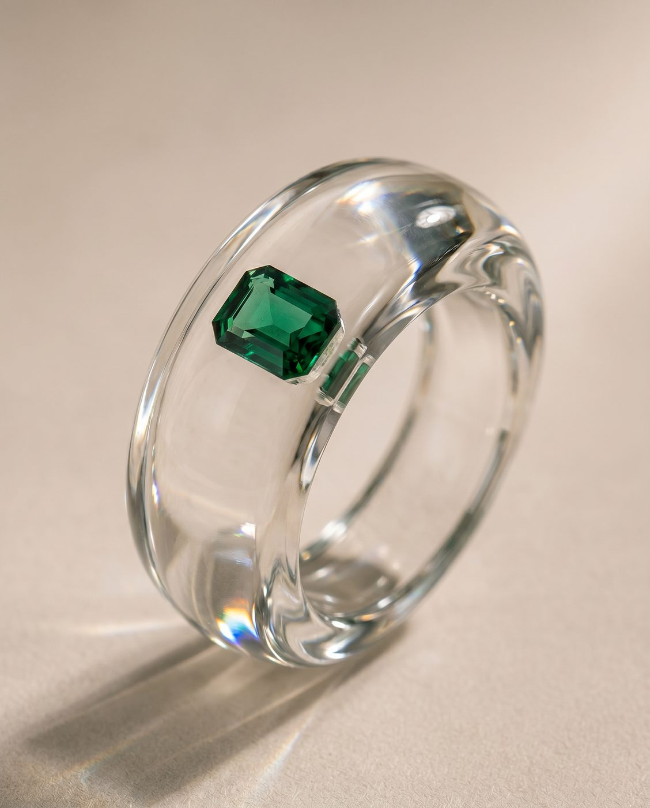
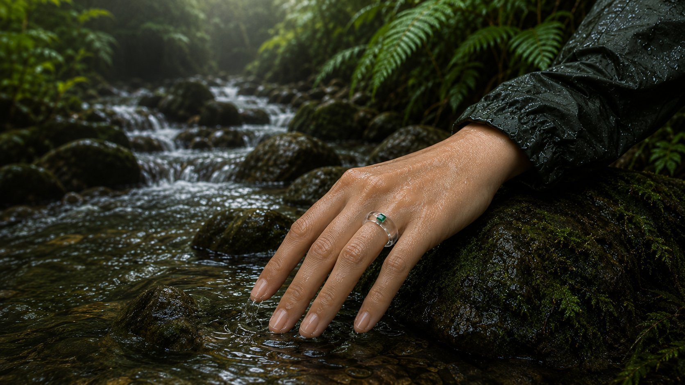

La piedra no se posa sobre el anillo. Existe dentro de él.
Una esmeralda colombiana revelada dentro de un volumen óptico transparente. La piedra no se esconde detrás de un engaste tradicional.
El diseño existe para revelar, no para ocultar.
02 / CLARIDAD ÓPTICA
Un volumen transparente de alta claridad visual.
Suspendida. Transparente. Revelada.
03 / ESMERALDA COLOMBIANA
Una esmeralda colombiana natural, seleccionada una a una.
Luz. Suspensión. Revelación.
04 / PRECISIÓN
Control del material, la posición, la transparencia y el acabado.
Esto exige desarrollo, precisión y control.

No hay dos piedras iguales.
Esmeralda colombiana
Piedra natural
Seleccionada una a una
Inclusiones y características únicas
ORIGEN
65M
años. Así de antigua es la formación geológica que hace posible una esmeralda colombiana.
~55%
de las esmeraldas del mundo salen de Colombia. No es una piedra más.
Muzo · Chivor
las minas que le dieron a Colombia su lugar en la historia de la esmeralda.
La luz es parte del objeto.
La luz atraviesa el volumen, cambia cómo se percibe la piedra, crea refracciones y revela la esmeralda desde ángulos que un engaste tradicional escondería.
La piedra
La esmeralda es un berilo. El cromo y el vanadio le dan ese verde profundo.
El jardín
Sus inclusiones, lo que los joyeros llaman el «jardín», son la huella de cómo se formó. Por eso ninguna es igual a otra.
La luz
El volumen transparente funciona como un lente: refracta la luz, proyecta destellos y deja ver la piedra por todos sus lados.

Llevar la naturaleza también es una forma de cuidarla.
De la tierra a la luz.
FLOAT 01
PREVENTA FUNDADORA
FLOAT 01
Una esmeralda colombiana natural, con certificado de laboratorio, suspendida en un volumen transparente de polímero de calidad óptica con protección UV. Hecho por artesanos colombianos, pieza por pieza.
Precio de preventa
$1.240.000 COP
Esmeralda 01 · cada piedra es única.
Precio estimado hasta que abra la preventa. Se aparta con el 50 % ($620.000) y el saldo se paga al ver tu anillo terminado.
Especial para ti
Elige tu esmeralda y tu talla.
Te confirmamos por Instagram y apartas con el 50 %.
Haremos tu anillo y pagas el saldo al verlo terminado.